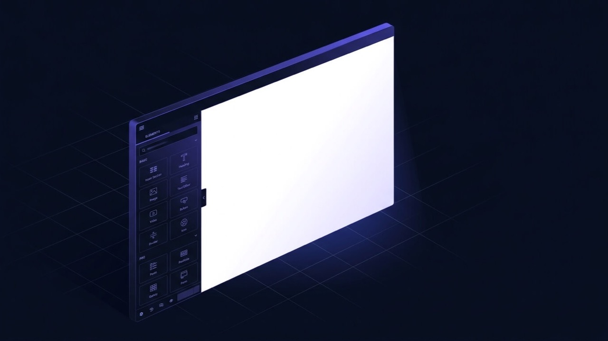

Elementor Editor Loading a Blank White Screen? Here's Why.
You click Edit with Elementor, wait for it to load, and get a completely blank white panel — no widgets, no error, nothing. The published page can still be fine, which is the biggest clue: this is an editor-specific failure, almost always a JavaScript conflict or a resource limit hit while the editor's own interface tries to build itself.

What is the problem?
An Elementor white screen is different from Elementor simply running slow or the editor getting stuck on a loading spinner. Here, the editor's interface partially or fully loads — you may see the top bar and side panel — but the main canvas where your page should render stays completely blank white. It's an editor-specific failure: the code that builds the visual editing interface is breaking somewhere between loading and rendering your content.
Quick answer: check the browser console (F12 → Console tab) first. A red JavaScript error there almost always names the exact script that broke, which is either a plugin conflicting with Elementor's editor scripts or a PHP resource limit cutting the page off mid-load.
The most useful diagnostic fact is what still works. If the published page looks fine and only the editor is blank, the problem is isolated to Elementor's own admin-side JavaScript environment, not your site's content or the page's saved data.
Common symptoms
- Clicking “Edit with Elementor” opens the editor frame, but the central canvas area is entirely white
- The top toolbar and left-hand widget panel may still appear and function, just with nothing to edit in the middle
- The browser's DevTools console shows a JavaScript error, often mentioning a script from another plugin or theme
- The published, live version of the same page displays completely normally to visitors
- It started right after installing a new plugin, activating a caching/minification setting, or updating Elementor or WordPress itself
- Other pages' editors may work fine while one specific page or template stays blank
Why does this happen?
Elementor's editor is itself a JavaScript application that runs inside an iframe within wp-admin. To render, it needs its own scripts, WordPress core scripts, and any theme or plugin scripts registered to load in the admin area to all execute cleanly together. If any one of those scripts throws an error, or a CSS/JS minification plugin combines and mangles them incorrectly, the editor's JavaScript can stop executing partway through — often before it ever draws the canvas, leaving a blank white area behind.
Separately, the editor consumes noticeably more server resources than a normal page load, since it's rendering your page content plus the entire editing interface at once. On tight PHP memory or execution-time limits, that combined load can hit the ceiling specifically in the editor even when the same page's PHP loads fine on the published, lighter-weight front end.
Common technical causes
- A plugin or theme script conflicting with Elementor's editor JavaScript — especially other page builders, some SEO plugins' admin scripts, and heavier admin-dashboard plugins
- CSS/JS minification or combination settings that accidentally include admin-area scripts, breaking their execution order
- PHP memory limit exhausted specifically inside the editor's heavier load, even where the front end loads within the same limit comfortably
- A security plugin or server firewall blocking Elementor's AJAX/REST API calls, which the editor depends on to fetch and build its interface
- An outdated or nulled Elementor or Elementor Pro version incompatible with the current WordPress core or PHP version
- Browser extensions (ad blockers, privacy tools) blocking specific scripts the editor needs — less common, but worth ruling out early since it's a thirty-second check
- Corrupted browser cache holding an old version of an editor script from before an update
How to diagnose it
- Open the browser console before reproducing the issue (F12 or right-click → Inspect → Console), then try to open the editor again. Read the first red error carefully — it usually names the exact script file at fault.
- Try a different browser, or a private/incognito window, to rule out a browser extension or a stale local cache.
- Check whether the published page renders fine. If yes, the issue is isolated to the editor's environment, not the page's saved content.
- Temporarily disable any CSS/JS minification or combination settings in your caching plugin, then retry — this rules in or out the single most common non-plugin cause.
- Deactivate all plugins except Elementor and Elementor Pro, then retry. If the editor loads, reactivate plugins one at a time until it breaks again.
- Raise PHP memory temporarily (via
wp-config.php,php.ini, or your host's PHP settings) to rule out a resource ceiling before assuming it's a plugin conflict.
How to fix it, step by step
- If the console names a specific plugin's script, update that plugin first — many editor conflicts are already patched in a newer release. If no update is available, deactivate it while editing and reactivate afterward, or find an alternative.
- Exclude Elementor's own scripts from any minification or JS combination settings in your caching plugin's exclusion list, rather than disabling minification sitewide.
- Raise the PHP memory limit to at least 256M for the admin area if a resource ceiling was the confirmed cause, via
wp-config.php(define('WP_MEMORY_LIMIT', '256M');) or your host's PHP settings. - Whitelist Elementor's AJAX and REST API endpoints in your security plugin or firewall if those were found to be the block, rather than disabling the firewall entirely.
- Update Elementor and Elementor Pro to the latest compatible versions, confirming your PHP version meets the current minimum first.
- Clear both browser cache and any server-side object/page cache after making a fix, then reload the editor to confirm cleanly rather than trusting a result that might still be cached.
When this needs professional help
Reading the console error and updating the plugin it names is realistic to do yourself. It's worth bringing in a developer when:
- The console error references a minified file with no readable plugin name, and tracing it back needs deeper debugging
- Deactivating plugins one at a time risks breaking something else on a live, actively-used site
- The conflict is between two plugins you need to keep, and the fix is a targeted script exclusion rather than removing either one
- You've worked through the checklist above and the canvas is still blank
How I can help
An Elementor editor going blank is one of the faster fixes I handle, precisely because the browser console almost always points straight at the cause. I read the actual error, isolate the conflicting script or resource limit, and apply the smallest fix that gets the editor working again — a script exclusion or a plugin update, not a full reinstall.